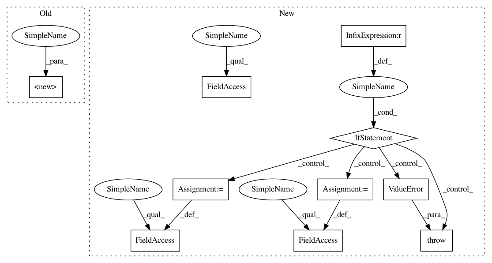

b7efb76e284f1cee02280dcbf2dee9b8d5c72317,pyannote/audio/pipeline/speech_activity_detection.py,SpeechActivityDetection,__init__,#SpeechActivityDetection#Any#,48
Before Change
def __init__(self, precomputed=None, **kwargs):
super(SpeechActivityDetection, self).__init__()
self.precomputed = precomputed
self.precomputed_ = Precomputed(self.precomputed)
self.has_overlap_ = self.precomputed_.dimension == 3
After Change
def __init__(self, scores: Optional[Path] = None):
super().__init__()
if scores is None:
msg = "Path to precomputed scores must be provided."
raise ValueError(msg)
self.scores = scores
self.precomputed_ = Precomputed(self.scores)
// hyper-parameters
self.onset = chocolate.uniform(0., 1.)
self.offset = chocolate.uniform(0., 1.)
self.min_duration_on = chocolate.uniform(0., 2.)
self.min_duration_off = chocolate.uniform(0., 2.)
self.pad_onset = chocolate.uniform(-1., 1.)
self.pad_offset = chocolate.uniform(-1., 1.)
def instantiate(self):
Instantiate pipeline with current set of parameters
In pattern: SUPERPATTERN
Frequency: 4
Non-data size: 10
Instances
Project Name: pyannote/pyannote-audio
Commit Name: b7efb76e284f1cee02280dcbf2dee9b8d5c72317
Time: 2018-11-22
Author: bredin@limsi.fr
File Name: pyannote/audio/pipeline/speech_activity_detection.py
Class Name: SpeechActivityDetection
Method Name: __init__
Project Name: pyannote/pyannote-audio
Commit Name: b7efb76e284f1cee02280dcbf2dee9b8d5c72317
Time: 2018-11-22
Author: bredin@limsi.fr
File Name: pyannote/audio/pipeline/speech_activity_detection.py
Class Name: SpeechActivityDetection
Method Name: __init__
Project Name: tensorflow/datasets
Commit Name: 87a21add9c0383c9b3cf9dd4cfad63384a538d51
Time: 2018-12-20
Author: rsepassi@google.com
File Name: tensorflow_datasets/core/features/video_feature.py
Class Name: Video
Method Name: __init__
Project Name: pfnet/optuna
Commit Name: 6c19a1706cd0185a77ef03527aad37d25bdf118e
Time: 2020-05-18
Author: k_nzw@klis.tsukuba.ac.jp
File Name: optuna/distributions.py
Class Name: IntLogUniformDistribution
Method Name: __init__
Project Name: fizyr/keras-retinanet
Commit Name: b097c96ce2db1b57b772290b67af61d1c942c13e
Time: 2018-01-15
Author: maarten@de-vri.es
File Name: keras_retinanet/preprocessing/coco.py
Class Name: CocoGenerator
Method Name: __init__